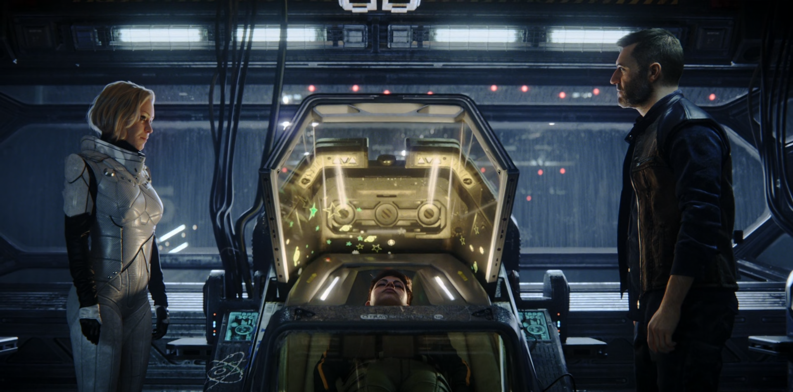
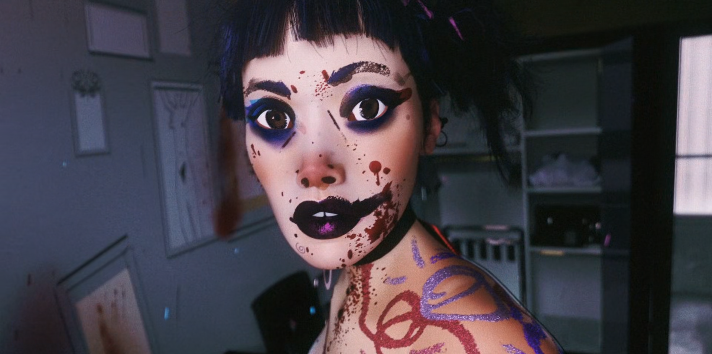
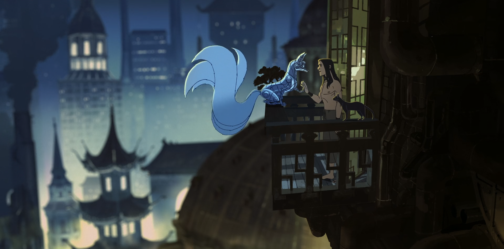
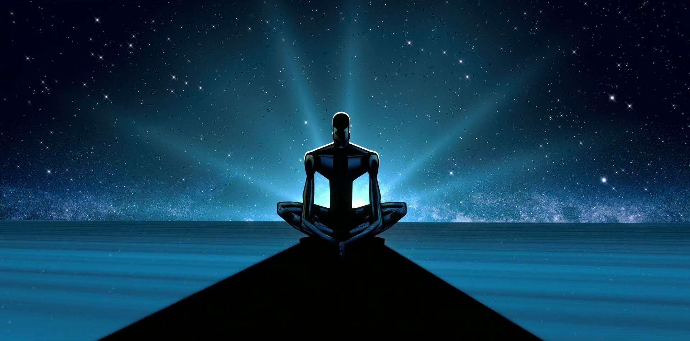

CÁC TẬP PHIM HAY NHẤT VOLUME 1 CỦA LOVE, DEATH & ROBOTS
Written on May 2nd , 2023 by Minh Tran
*Bài viết có tiết lộ nội dung của một số tập phim
Love, Death & Robots (❤️❌🤖) là một TV Series hoạt hình người lớn sáng tạo bởi Tim Miller (người đứng sau thành công của những Deadpool, Sonic the Hedgehog) do Netflix sản xuất và phát hành, với volume đầu tiên ra mắt vào năm 2019. Ngồi cùng Miller ở ghế sản xuất còn có David Fincher, một trong những bộ óc sáng tạo nhất Hollywood với những tác phẩm thuộc vào dạng kinh điển như Se7en (1995), Fight Club (1999) hay The Social Network (2010). Không giống với những series thông thường, nội dung các tập của Love, Death & Robots hoàn toàn độc lập, không liên quan gì đến nhau, do đó chúng ta có thể chọn ngẫu nhiên bất kỳ một tập nào của series để thưởng thức. Như tiêu đề của chuỗi phim, các tập phim tập trung khai thác vào ba khía cạnh chính của con người là tình yêu, cái chết và người máy. Với thời lượng chỉ từ 6 đến 21 phút, hầu hết các tập phim vẫn kể được một câu chuyện hấp dẫn và sức nặng, đầy tính điện ảnh, có khởi đầu, cao trào và thậm chí là cả những plot twist. Từ hài hước, châm biếm, đến bạo lực, nhục dục trần trụi, phim đặt ra những vấn đề đáng suy ngẫm về thực tại, giấc mơ hay cả về bản chất con người. Bên cạnh đó, kỹ xảo phim đầy mãn nhãn, sáng tạo kết hợp với âm thanh đỉnh cao đã mang đến cho những ai thưởng thức Love, Death & Robots một trải nghiệm không khác gì một bộ phim điện ảnh đích thực.
Volume 1 của series bao gồm 18 tập phim, với độ dài từ 6 đến 17 phút. Do mỗi tập phim lại kể một câu chuyện khác nhau, với một thời lượng ngắn, nên chắc chắn sẽ có sự chênh lệch về chất lượng giữa các tập. Vì vậy trong bài viết này, mình sẽ chọn ra những tập phim mà mình cảm thấy ấn tượng nhất ở volume 1, cùng với đó là một số cảm nhận của mình về những tập phim này. Các tập phim trong bài viết được trình bày theo thứ tự mà mình xem, hoàn toàn không xếp hạng chất lượng giữa các tập, vì với mình có lẽ chúng đều ấn tượng như nhau.
Beyond the Aquila Rift
Thom, thuyền trưởng của con tàu Blue Goose, cùng với các phi hành đoàn khác gồm Suzy và Ray, đang trên đường trở về Trái Đất sau khi hoàn thành một nhiệm vụ. Tuy nhiên, hệ thống gặp lỗi khiến con tàu bị lạc trong không gian. Trong lúc hoang mang không hiểu chuyện gì đang xảy ra, Greta, tình cũ của Thom bất ngờ xuất hiện và thông báo tình trạng của con tàu. Hai người nhanh chóng lao vào “ăn nhau”. Sau đó, Greta mới thông báo tình trạng thật sự của con tàu và tiết lộ rằng họ sẽ không thể trở về Trái Đất được nữa. Thom hoàn toàn bối rối, yêu cầu được biết sự thật. Greta khóc và khẳng định rằng cô quan tâm và cứu rỗi mọi linh hồn lạc tới đây. Lúc này. Thom mới thực sự tỉnh dậy trong bộ dạng của một ông già, xung quanh là một khung cảnh hoang tàn, nơi những người đồng đội của anh đang bất tỉnh hoặc đã chết. Một con nhện xuất hiện và tiến gần tới. Phim kết thúc với cảnh Thom một lần nữa thức dậy trong bộ dạng bình thường và gặp lại Greta như đầu phim.
“I do care for all the lost souls that end up here” - Greta

Nội dung của Beyond the Aquila Rift khiến chúng ta dễ dàng liên tưởng ngay đến The Matrix, với hai viên thuốc xanh và đỏ: ảo mộng đẹp đẽ hay hiện thực nghiệt ngã. Liệu ta muốn sống đắm chìm trong những khung cảnh tươi đẹp nhưng đầy giả dối hay một thực tại tàn nhẫn và đau đớn? Phim một lần nữa đặt ra câu hỏi về bản chất của sự sống, liệu ta có phải là con rối được lập trình và điều khiển bởi một ai đó mà quên đi chính mình. Bên cạnh đó, nhện Greta là thực thể tốt hay xấu cũng là một điểm đáng để tranh luận. Greta khẳng định rằng mình quan tâm đến tất cả các linh hồn lạc tới đây, với một ánh mắt sâu thẳm đầy nước mắt, và thực tế, nó đã vẽ ra một khung cảnh trong mơ để những sinh vật lạc tới rìa Aquila quên đi hiện thực tàn nhẫn. Tuy nhiên, cũng có ý kiến cho rằng, Greta thực sự chẳng hề quan tâm tới bất kỳ ai như nó nói, vì thực tế sau khi cho những linh hồn chìm trong khoái lạc, nó dần tiết lộ sự thật và đẩy tâm trí của họ tới tận cùng của sự tuyệt vọng, và bản chất nó chỉ đang tiến hành hấp thụ con mồi mà thôi.
Sonnie’s Edge

The Secret War
The Witness

Good Hunting

Shape-Shifters
Zima Blue
